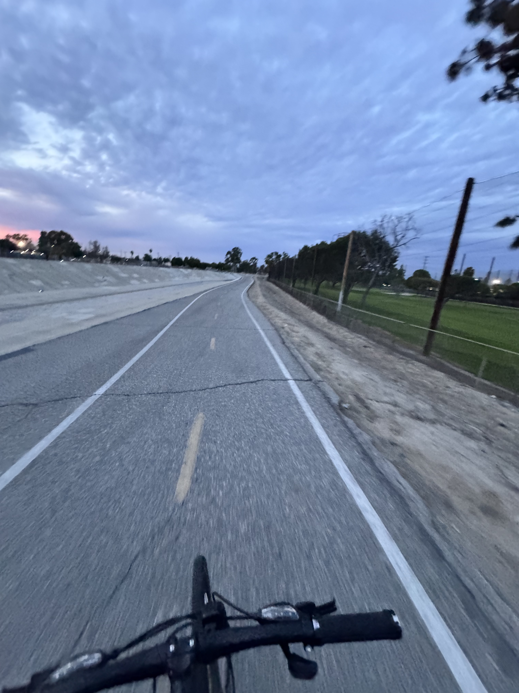

Giancarlo Perez
student · programmer · gooner
Photo Story
Who I am, my interests, experiences, and people that shaped who I am.



What you'll find here
- About · who I am, my story, and the people who shaped me
- Senior Showcase · my resume and three academic artifacts
- Global Citizenship · community action, service, activities, and my college journey
- Projects · things I've built with code